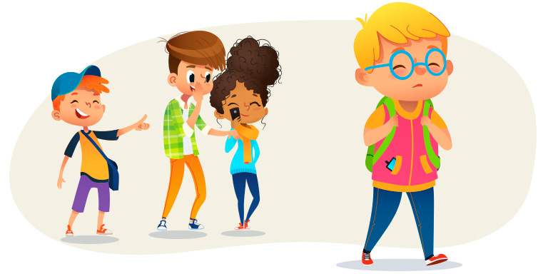

Que es el bullying ?
El bullying o acoso escolar es aquel comportamiento de persecución u hostigamiento que tiene un alumno hacia otro, éste puede ser de carácter físico o psicológico, se realiza constantemente y se mantiene con el tiempo. El objetivo de este maltrato es intimidar, dañar y asustar, de esta manera el acosador obtiene alguna ventaja de su víctima. El bullying no distingue clases sociales, edad o nacionalidad, puesto que cualquiera puede ser víctima o victimario. La denuncia a tiempo es fundamental porque de esta manera se atenderá a tiempo el problema y se evitaran consecuencias lamentables.
Bullying es una palabra inglesa, también conocido como “acoso escolar” o “hostigamiento escolar“, bullying está compuesto por la voz “bully” que quiere decir “matón” o “peleón” más la terminación “ing” que indica la acción o el resultado de una acción. Según las estadísticas la edad más frecuente en la que se presenta el bullying es entre los 7 y 14 años, no obstante, hay conductas que aparecen en los niños más pequeños, pero no se pueden medir por falta de métodos científicos. El bullying escolar es muy común en las instalaciones educativas, consiste en practicar actos violentos e intimidatorios constantes sobre otro compañero de clase, con el propósito de agredir y hacerlo sentir mal e inseguro, y de ésta manera entorpecer su desenvolvimiento en clases. Por esta razón, los más afectados son los niños y jóvenes que por algún motivo son diferentes a sus compañeros; por lo general son jovenes de apariencia sumisa debido a una baja autoestima e inseguridades.
El acoso escolar (también conocido como hostigamiento escolar, matonaje escolar, maltrato escolar o en inglés school bullying) es cualquier forma de maltrato psicológico, verbal o físico producido entre estudiantes de forma reiterada a lo largo de un tiempo determinado tanto en el aula, como a través de las redes sociales, con el nombre específico de ciberacoso.1 Estadísticamente, el tipo de violencia dominante es el emocional y se da mayoritariamente en la clase y en los patios escolares. Los protagonistas de los casos de acoso escolar suelen ser niños y niñas en proceso de entrada en la adolescencia, siendo ligeramente mayor el porcentaje de niñas en el perfil de víctimas
